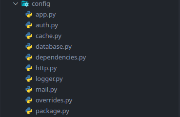

Configuration¶
Structure¶
All Uvicore packages contain their own configuration in the config directory.

The 2 main configs are app.py and package.py of which all other .py files are referenced.
When you are "running" or "serving" your package as an application, the app.py config is used to define all runtime information. The package.py is also used for package specific configs.
When your package is used inside another package (as a shared library for example), the app.py is not used.
Registering Configs¶
All packages register their own configs using a unique key, generally your apps name. This
registration is done inside the packages package/provider.py Provider in the register() method.
If a config is already registered with the same key then the Dictionary value
will be deep merged. This allows packages to override other package configs
at a granular level. The last provider defined wins.
@uvicore.provider()
class Myapp(Provider, Cli):
def register(self) -> None:
# Register configs
# If config key already exists items will be deep merged allowing
# you to override granular aspects of other package configs
self.configs([
# Here self.name is your packages name (ie: myapp).
{'key': self.name, 'value': self.package_config},
# Example of how to override another packages config with your own.
#{'key': 'uvicore.auth', 'module': 'myapp.config.packages.auth.config'},
])
Getting a Config Instance¶
You can get hold of the main config instance in many different ways.
By importing the uvicore module as a namespace and accessing the config global
variable
import uvicore
uvicore.config('app.name')
By importing the uvicore.config global variable directly
from uvicore import config
config('app.name')
By "making" from the Ioc container
import uvicore
config = uvicore.ioc.make('config') # Other aliases: Configuration, Config
config('app.name')
By using the proper package. Some classes have the current package as self.package.
Or you can find your package from the uvicore.app.package method.
import uvicore
package = uvicore.app.package('acme/wiki')
package.config('cache')
Usage¶
Info
config is a class with a __call__ method so you can use the class like a
method config('app.name'). This is provided as a convenience.
Under the hood the __call__ simply calls a dotget() method. Technically you
can also get config values by using this dotget() method like so
config.dotget('app').
Config is also a uvicore SuperDict!. This means you can use method style dot notation
to access the entire nested config structure like config.app.cache. So use it like
a method config('app') or as method dot notation config.app!
Getting Values¶
Notice
The config system is a large SuperDict. One of the main differences of a SuperDict is that keys that do not exist to not return None, they return an empty SuperDict({}) which allows method style chaining to work properly. So never check if config.connections is None as it will never be none. Instead just check if config.connection. This also means that hasattr(config, 'somekey') will ALWAYS return True even if the key does not exist because it default to SuperDict({}).
Get the entire config Dictionary from all packages, completely deep merged based on provider order override
config
# or
config()
Warning
Do not use .get(). Since the config system is essentially a large uvicore SuperDict using .get() is actually a standard python Dictionary .get(). So .get('onelevel') does work as it would on any dictionary, but .get('onelevel.twolevel') will not. This is why the .dotget() method exists. Or just use method style dot notation because its a class like SuperDict! (ex: config.onelevel.twolevel).
Get the main app config which is defined in the main running app
config/app.py file. This main app config is not deep merged as it is the only
running app config.
config.app
# or
config('app')
# or
config.dotget('app')
# or
config['app']
Get a value from the app config
config.app.name
# or
config('app.name')
# or
config.dotget('app.name')
# or
config['app']['name']
Get the entire config for a package named acme.wiki and get a few single
values. This is the main wiki config defined in config/wiki.py for example.
This config is meant to be overridden as needed by other packages.
config.acme.wiki.database.connections
# or
config('acme.wiki.database.connections')
# or
config.dotget('acme.wiki.database.connections')
# or
config['acme']['wiki']['database']['connections']
Settings Values¶
Generally you don't want to set config values on-the-fly, but you can because it's just a SuperDict.
Sets the entire database connection dictionary with a new one
config.app1.database.connections.app1 = Dict({'foo': 'bar'})
# or
config.dotset('acme.wiki.database.connections', {'foo': 'bar'})
Merges this database connection dictionary with one that already exists
config.acme.wiki.database.connections.merge({'foo': 'bar'})
# or
config.dotget('acme.wiki.database.connections').merge({'foo': 'bar'})
Digging Deeper¶
The Uvicore framework as a whole is really composed from a series of smaller Uvicore packages. Just like a personal package you would create using the uvicore-installer. The configuration system of uvicore is no exception. The uvicore.configuration package is made up of a standard Service Provider that is bootstrapped as part of a core non-optional dependency automatically added from uvicore.foundation. This uvicore.configuration package is bootstrapped first thing, high up in the stack and is therefore available to the framework almost immediately.
The Configuration class in uvicore/configuration/configuration.py is bound to the IoC as a singleton. This singleton is deeply merged and overridden by any package further down the bootstrapping chain. This is what allows packages to override other packages configurations to eventually provide the perfect and complete config.
The object inside the config singleton is actually a Uvicore SuperDict which, among many other features, is basically a python Dict on steroids that allows you to access all items using class like dot.notation.
You can view all IoC binding by running:
./uvicore ioc bindings
Or view only the actual config singleton class by running:
./tests/apps/app1/uvicore ioc get uvicore.configuration.configuration.Configuration